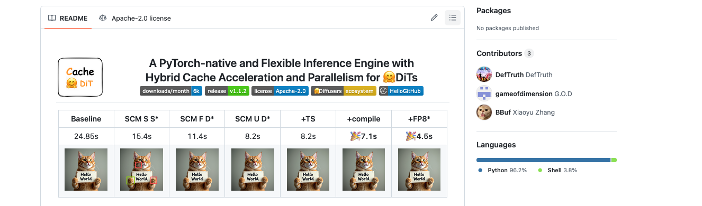
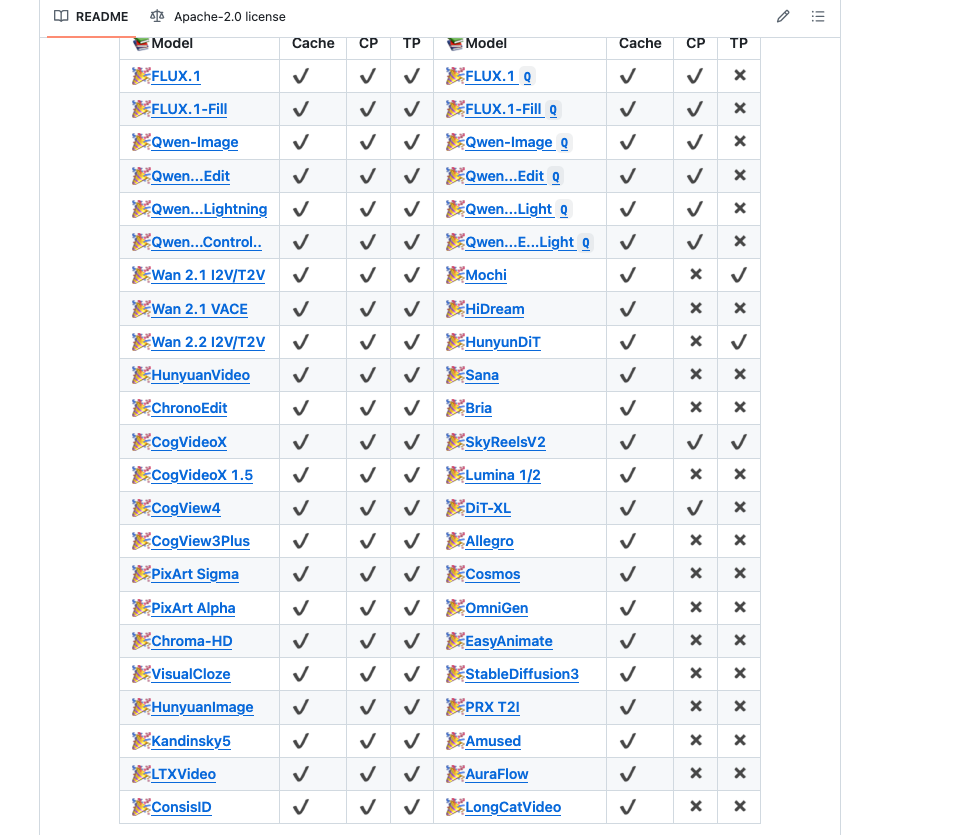
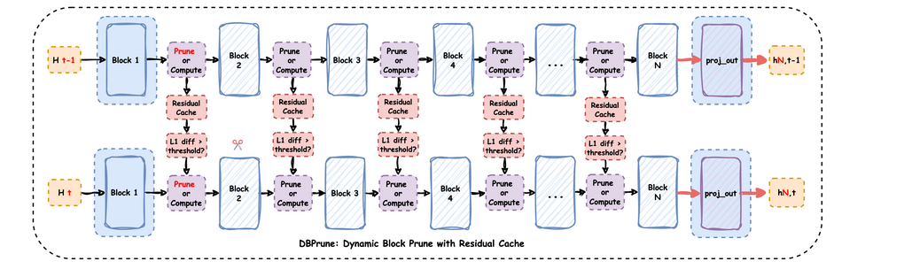
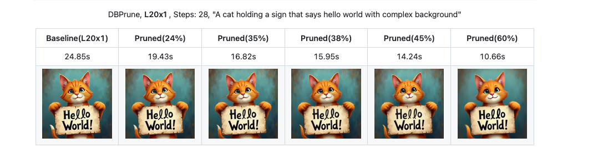
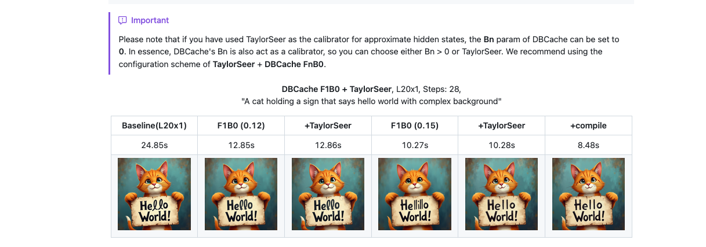
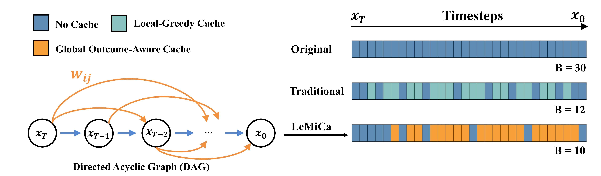
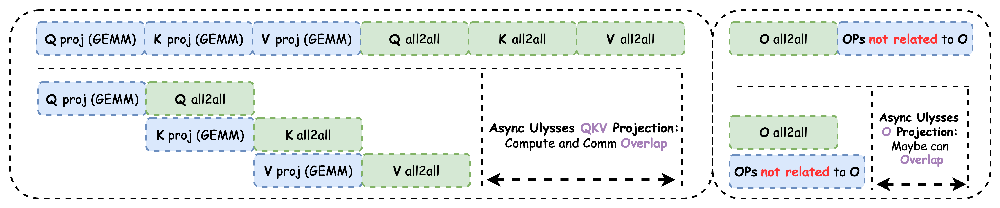

Cache Dit 학습 노트
원본 markdown은 다음을 참고하라. https://github.com/BBuf/how-to-optim-algorithm-in-cuda/blob/master/large-language-model-note/Cache-Dit%20%E5%AD%A6%E4%B9%A0%E7%AC%94%E8%AE%B0.md
서문¶
최근 DiT(Diffusion Transformer) inference optimization을 연구하다가 Cache-Dit 프로젝트를 접했고, 지금도 이 프로젝트 구축에 참여하고 있다. 꽤 흥미롭지만 아직 인지도가 그렇게 크지는 않은 작업이라고 느껴져, 여기서 학습 노트 하나를 작성해 홍보도 겸하려 한다. Cache-Dit은 Vipshop이 open source로 공개한 PyTorch native DiT inference acceleration engine(https://github.com/vipshop/cache-dit)이다. hybrid cache acceleration과 parallelization technique으로 DiT model inference를 가속한다. 이 프로젝트에서 가장 매력적인 점은 여러 cache algorithm을 구현했을 뿐 아니라 Context Parallelism과 Tensor Parallelism도 지원하고, torch.compile 및 quantization method와의 integration도 해냈다는 점이다. 가장 중요한 것은 새 model 지원이 비교적 빠르다는 점이다.

관심 있는 분들은 star를 누르거나 contribution을 해주면 좋겠다.
이 노트는 Cache-Dit의 핵심 기술 포인트를 자세히 기록한다. cache strategy, parallelization scheme, 여러 optimization option의 사용법을 포함한다. FLUX.1-dev와 Wan 2.2라는 두 typical model을 예로 들어 실제 application에서 Cache-Dit의 optimization effect를 설명한다. 또한 Cache-Dit이 최근 구현한 Ulysses Anything Attention feature와 communication/computation overlap optimization인 Async Ulysses QKV Projection도 중점적으로 소개한다.
repository author는 Zhihu에 cache 관련 및 model support 관련 technical detail 글을 많이 올렸다. 관심 있는 분들은 볼 수 있다. https://www.zhihu.com/people/qyjdef/posts
model support list

Cache-Dit의 핵심 design philosophy¶
Cache-Dit의 design philosophy는 몇 가지 keyword로 요약할 수 있다. PyTorch native, flexible, easy-to-use다. 독립 inference framework가 아니라 기존 Diffusers Pipeline에 seamless하게 integrate할 수 있는 acceleration library다. 이런 design 덕분에 torch.compile, quantization, CPU offload 등 다른 optimization method와 쉽게 조합해 사용할 수 있다.
Cache-Dit은 거의 모든 Transformer 기반 DiT model을 지원한다. FLUX.1, Qwen-Image, Wan series, HunyuanVideo, CogVideoX 등 30개가 넘는 model series와 거의 100개 pipeline을 포함한다. Forward Pattern Matching mechanism으로 서로 다른 model의 Transformer Block structure를 자동 식별한 뒤, 대응하는 cache strategy를 적용한다.
unified Cache API design¶
Cache-Dit의 가장 큰 특징은 unified API interface를 제공한다는 점이다. 대부분의 경우 한 줄 code만으로 cache acceleration을 enable할 수 있다.
import cache_dit
from diffusers import DiffusionPipeline
pipe = DiffusionPipeline.from_pretrained("Qwen/Qwen-Image")
cache_dit.enable_cache(pipe) # 한 줄 code로 cache enable
output = pipe(...)
stats = cache_dit.summary(pipe) # cache statistics 확인
cache_dit.disable_cache(pipe) # cache disable
이 design은 사용자가 기존 code에 Cache-Dit을 매우 편리하게 integrate할 수 있게 하며, 많은 code 수정이 필요하지 않다. 예를 들면 다음과 같다. https://zhuanlan.zhihu.com/p/1950849526400263083
Forward Pattern Matching¶
Cache-Dit은 Forward Pattern Matching mechanism으로 서로 다른 model의 Transformer Block structure를 식별한다. 현재 6가지 Forward Pattern을 지원하며, 각 pattern은 block forward의 input/output signature를 정의한다.
Pattern_0: dual input dual output, hidden_states가 먼저 반환됨
- input: (hidden_states, encoder_hidden_states)
- output: (hidden_states, encoder_hidden_states)
- typical model: 초기 일부 DiT model
Pattern_1: dual input dual output, encoder_hidden_states가 먼저 반환됨
- input: (hidden_states, encoder_hidden_states)
- output: (encoder_hidden_states, hidden_states)
- typical model: FLUX.1의 transformer_blocks(diffusers<0.35.0 version)
Pattern_2: dual input single output, hidden_states만 반환
- input: (hidden_states, encoder_hidden_states)
- output: (hidden_states,)
- typical model: Wan 2.1/2.2, CogVideoX, HunyuanVideo, Qwen-Image, LTXVideo, CogView3Plus/4, SkyReelsV2, Kandinsky5
Pattern_3: single input single output, hidden_states만 있음
- input: (hidden_states,)
- output: (hidden_states,)
- typical model: FLUX.1의 single_transformer_blocks, Mochi, PixArt, SD3, DiT-XL, Chroma, HiDream, Allegro, Sana, Lumina, OmniGen, AuraFlow
...
이 pattern을 식별함으로써 Cache-Dit은 어떤 tensor를 cache해야 하고 어떤 tensor를 recompute해야 하는지 자동으로 결정할 수 있다. Pattern 식별은 block의 forward method signature를 검사해 구현하며, parameter name과 return value 수를 포함한다.
Block Adapter mechanism¶
특수한 model이나 custom Transformer를 위해 Cache-Dit은 Block Adapter mechanism을 제공한다. Block Adapter를 통해 사용자는 transformer, blocks, forward_pattern 등의 정보를 수동으로 지정해 Cache-Dit이 cache strategy를 올바르게 적용할 수 있게 한다.
BlockAdapter의 핵심 parameter¶
BlockAdapter는 dataclass이며 다음 core parameter를 포함한다.
Transformer configuration 관련:
- pipe: DiffusionPipeline instance, Transformer-only scenario에서는 None일 수 있다.
- transformer: single transformer 또는 transformer list, Wan 2.2 같은 multi-transformer model을 지원한다.
- blocks: torch.nn.ModuleList 또는 그 list, cache를 적용할 transformer blocks를 지정한다.
- blocks_name: transformer 안에서 blocks의 property name, 예를 들어 "transformer_blocks", "blocks" 등이다.
- unique_blocks_name: internal use를 위한 unique identifier, 자동 생성된다.
- dummy_blocks_names: skip해야 하는 blocks name list다.
Forward Pattern configuration:
- forward_pattern: ForwardPattern enum 또는 그 list, blocks의 forward pattern을 지정한다.
- check_forward_pattern: forward pattern matching을 check할지 여부, 기본적으로 diffusers model에 대해 enable된다.
- check_num_outputs: output count를 check할지 여부, 더 엄격한 pattern validation에 사용한다.
parameter modifier:
- params_modifiers: ParamsModifier 또는 그 list, 서로 다른 blocks에 서로 다른 cache parameter를 설정하는 데 사용한다.
Pipeline level configuration:
- patch_functor: PatchFunctor instance, transformer의 forward method를 수정하는 데 사용한다.
- has_separate_cfg: independent CFG forward가 있는지 여부, Wan 2.1, Qwen-Image 등이 그렇다.
automatic Block Adapter configuration:
- auto: automatic block adapter를 enable할지 여부, 적절한 blocks를 자동으로 찾는다.
- allow_prefixes: 허용되는 blocks property name prefix, 기본적으로 "transformer", "blocks", "layers" 등을 포함한다.
- check_prefixes: prefix를 check할지 여부다.
- allow_suffixes: 허용되는 block class name suffix, 예를 들어 "TransformerBlock"이다.
- check_suffixes: suffix를 check할지 여부다.
- blocks_policy: 여러 candidate blocks가 있을 때의 selection strategy, "max"는 block 수가 가장 많은 것을 선택하고 "min"은 가장 적은 것을 선택한다.
기타 configuration:
- skip_post_init: post_init을 skip할지 여부, special scenario에 사용한다.
예를 들어 FLUX.1처럼 여러 transformer blocks가 있는 model의 경우:
from cache_dit import ForwardPattern, BlockAdapter
cache_dit.enable_cache(
BlockAdapter(
pipe=pipe,
transformer=pipe.transformer,
blocks=[
pipe.transformer.transformer_blocks,
pipe.transformer.single_transformer_blocks,
],
forward_pattern=[
ForwardPattern.Pattern_1,
ForwardPattern.Pattern_3,
],
),
)
Wan 2.2처럼 여러 Transformer가 있는 MoE model의 경우:
cache_dit.enable_cache(
BlockAdapter(
pipe=pipe,
transformer=[
pipe.transformer,
pipe.transformer_2,
],
blocks=[
pipe.transformer.blocks,
pipe.transformer_2.blocks,
],
forward_pattern=[
ForwardPattern.Pattern_2,
ForwardPattern.Pattern_2,
],
params_modifiers=[
ParamsModifier(
cache_config=DBCacheConfig().reset(
max_warmup_steps=4,
max_cached_steps=8,
),
),
ParamsModifier(
cache_config=DBCacheConfig().reset(
max_warmup_steps=2,
max_cached_steps=20,
),
),
],
has_separate_cfg=True,
),
)
이 flexible design 덕분에 Cache-Dit은 여러 복잡한 model structure를 지원할 수 있다.
automatic Block Adapter¶
model의 blocks structure가 확실하지 않을 때는 automatic Block Adapter를 사용할 수 있다.
from cache_dit import ForwardPattern, BlockAdapter
cache_dit.enable_cache(
BlockAdapter(
pipe=pipe,
auto=True, # automatic mode enable
forward_pattern=ForwardPattern.Pattern_2,
allow_prefixes=["transformer", "blocks"], # optional, custom search prefix
blocks_policy="max", # blocks count가 가장 많은 것을 선택
),
)
automatic mode는 transformer의 모든 property를 순회하며 조건에 맞는 ModuleList를 찾고, forward pattern이 match되는지 validate한다.
LoRA model support¶
Cache-Dit은 LoRA를 사용하는 model을 완전히 지원한다. LoRA 사용 시 두 가지 방식이 있다.
방식 1: LoRA를 직접 사용한다. inference에 권장된다.
from diffusers import FluxPipeline
import cache_dit
pipe = FluxPipeline.from_pretrained(
"black-forest-labs/FLUX.1-dev",
torch_dtype=torch.bfloat16,
).to("cuda")
# LoRA load
pipe.load_lora_weights("path/to/lora")
# cache enable
cache_dit.enable_cache(pipe)
# normal inference
image = pipe(prompt, ...).images[0]
방식 2: Fuse LoRA. benchmark에 권장된다.
# LoRA load
pipe.load_lora_weights("path/to/lora")
# Fuse LoRA into base model
pipe.fuse_lora()
pipe.unload_lora_weights()
# cache enable
cache_dit.enable_cache(pipe)
Fuse LoRA는 LoRA weight를 base model에 merge한다. 이렇게 하면 inference 시 additional computation overhead를 피할 수 있다. 여러 번 inference해야 하는 scenario에서는 fuse_lora가 더 좋은 선택이다.
Cache-Dit의 Patch Functor는 LoRA 관련 scale_lora_layers와 unscale_lora_layers call을 자동으로 처리해 cache mechanism이 LoRA와 compatible하도록 보장한다. LoRA를 지원하는 model에는 FLUX.1, Qwen-Image, HiDream, Chroma, Wan VACE, HunyuanVideo 등이 포함된다.
DBCache: Dual Block Cache¶
DBCache는 Cache-Dit의 core cache algorithm이며, full name은 Dual Block Cache다. 핵심 idea는 두 group의 compute blocks(Fn과 Bn)로 performance와 accuracy의 balance를 맞추는 것이다.
DBCache의 design principle¶
DBCache의 design은 한 가지 observation에 기반한다. Diffusion model inference 과정에서 인접 time step의 hidden states 변화는 gradual하다. residual diff(L1 distance)가 어떤 threshold보다 작으면 전체 block을 recompute하지 않고 cached residual을 직접 사용할 수 있다.
DBCache는 두 key parameter를 도입한다.
-
Fn (First n blocks): 앞 n개 Transformer blocks가 항상 full computation을 수행하도록 지정한다. 이 blocks는 현재 time step 정보를 fitting하고 더 stable한 L1 diff를 계산하며, subsequent blocks에 더 accurate한 정보를 제공하는 데 사용된다.
-
Bn (Back n blocks): 뒤 n개 Transformer blocks도 full computation을 수행하도록 지정한다. 이 blocks는 auto-scaler 역할을 하며, residual cache를 사용한 approximate hidden states의 prediction accuracy를 강화한다.
중간 blocks는 residual_diff_threshold에 따라 cache 사용 여부를 결정한다.
DBCache configuration option¶
from cache_dit import DBCacheConfig
cache_dit.enable_cache(
pipe,
cache_config=DBCacheConfig(
max_warmup_steps=8, # 앞 8 step은 cache를 사용하지 않고 warm up에 사용
max_cached_steps=-1, # -1은 unlimited를 의미
Fn_compute_blocks=8, # F8, 앞 8 blocks는 항상 compute
Bn_compute_blocks=0, # B0, 뒤 0 blocks, 즉 Bn을 사용하지 않음
residual_diff_threshold=0.12, # residual diff threshold
),
)
서로 다른 FnBn configuration은 서로 다른 performance/accuracy trade-off를 가져온다. repository의 benchmark data(https://github.com/vipshop/cache-dit/tree/main/bench)에 따르면 FLUX.1-dev에서 다음과 같다.
- F8B0_W4MC0_R0.08: 1.80x acceleration, Clip Score: 32.99, ImageReward: 1.04
- F8B0_W4MC2_R0.12: 1.93x acceleration, Clip Score: 32.95, ImageReward: 1.02
- F4B0_W4MC3_R0.12: 2.47x acceleration, Clip Score: 32.90, ImageReward: 1.01
- F4B0_W4MC4_R0.12: 2.66x acceleration, Clip Score: 32.84, ImageReward: 1.01
Fn이 작을수록, max_continuous_cached_steps(MC)가 클수록 acceleration effect는 더 좋지만 accuracy는 약간 떨어진다.
residual_diff_threshold 선택¶
residual_diff_threshold는 DBCache에서 가장 중요한 hyperparameter다. 언제 cache를 사용하고 언제 recompute할지 결정한다.
일반적으로: - threshold가 작을수록 cache 사용 frequency가 낮고, accuracy는 높지만 speed는 느리다. - threshold가 클수록 cache 사용 frequency가 높고, speed는 빠르지만 accuracy가 떨어질 수 있다.
서로 다른 model과 서로 다른 blocks에서 optimal threshold는 다를 수 있다. Cache-Dit은 cache_dit.summary(pipe, details=True)를 제공해 각 cached step의 residual diff statistics를 확인하게 하며, 사용자가 적절한 threshold를 선택하는 데 도움을 준다.
FLUX.1의 single_transformer_blocks의 경우 앞의 transformer_blocks에서 error accumulation이 있으므로 보통 더 높은 threshold, 예를 들어 0.16이 필요하고, transformer_blocks는 더 낮은 threshold, 예를 들어 0.08을 사용할 수 있다.
DBPrune: Dynamic Block Prune¶
DBCache 외에도 Cache-Dit은 DBPrune(Dynamic Block Prune) algorithm을 구현했다. DBPrune과 DBCache의 idea는 비슷하지만, residual을 cache하는 것이 아니라 특정 blocks의 computation을 직접 skip(prune)한다.

from cache_dit import DBPruneConfig
cache_dit.enable_cache(
pipe,
cache_config=DBPruneConfig(
max_warmup_steps=8,
Fn_compute_blocks=8,
Bn_compute_blocks=8,
residual_diff_threshold=0.12,
enable_dynamic_prune_threshold=True,
non_prune_block_ids=list(range(16, 24)), # prune하지 않을 blocks 지정
),
)
DBPrune은 더 aggressive한 acceleration을 구현할 수 있지만 parameter를 더 주의 깊게 조정해야 한다. repository의 User Guide에 따르면 FLUX.1에서 L20 GPU를 사용할 때 DBPrune은 서로 다른 비율의 blocks를 prune하여 서로 다른 수준의 acceleration을 구현할 수 있다. 자세한 내용은 https://github.com/vipshop/cache-dit/blob/main/docs/User_Guide.md#dbprune 를 참고하라.

Hybrid Cache CFG¶
Cache-Dit은 CFG(Classifier-Free Guidance)에 대한 hybrid cache를 지원한다. 서로 다른 DiT model은 CFG 처리 방식이 다르다.
두 가지 CFG mode¶
- Separate CFG: CFG와 non-CFG가 분리된 두 번의 forward다.
- typical model: Wan 2.1/2.2, Qwen-Image, CogView4, Cosmos, SkyReelsV2 등
-
enable_separate_cfg=True설정이 필요하다. -
Fused CFG: CFG와 non-CFG가 한 번의 forward에 fused되어 있다.
- typical model: FLUX.1, HunyuanVideo, CogVideoX, Mochi, LTXVideo, Allegro, CogView3Plus, SD3 등
enable_separate_cfg=False(default) 설정이 필요하다.
configuration parameter¶
from cache_dit import DBCacheConfig
cache_dit.enable_cache(
pipe_or_adapter,
cache_config=DBCacheConfig(
Fn_compute_blocks=8,
Bn_compute_blocks=0,
residual_diff_threshold=0.12,
# CFG 관련 configuration
enable_separate_cfg=True, # Wan 2.1, Qwen-Image 등은 True 필요
cfg_compute_first=False, # False는 0,2,4,...가 non-CFG; 1,3,5,...가 CFG임을 의미
cfg_diff_compute_separate=True, # CFG와 non-CFG에 대해 diff를 따로 계산할지 여부
),
)
parameter explanation¶
enable_separate_cfg: separate CFG mode를 enable할지 여부True: Wan, Qwen-Image 등 model에 적용한다. CFG와 non-CFG는 두 번의 independent forward다.-
False또는None: FLUX, HunyuanVideo 등 model에 적용한다. CFG는 single forward 안에 fused되어 있다. -
cfg_compute_first: CFG forward의 execution order False(default): transformer step 0,2,4,...는 non-CFG step이고, 1,3,5,...는 CFG step이다.-
True: transformer step 0,2,4,...는 CFG step이고, 1,3,5,...는 non-CFG step이다. -
cfg_diff_compute_separate: CFG와 non-CFG에 대해 residual diff를 따로 계산할지 여부 True(default): CFG와 non-CFG가 각각 independent residual diff statistics를 유지한다.False: CFG step이 non-CFG step에서 계산한 diff 값을 reuse한다.
implementation principle¶
source code에서 Cache-Dit은 enable_separate_cfg에 따라 step counting logic을 자동 조정한다.
# cache_context.py에서 가져옴
if not self.cache_config.enable_separate_cfg:
self.executed_steps += 1 # 각 transformer forward를 한 step으로 계산
else:
# Separate CFG mode: 두 번의 transformer forward가 한 step
if not self.cache_config.cfg_compute_first:
if not self.is_separate_cfg_step():
# non-CFG step에서만 executed_steps 증가
self.executed_steps += 1
이 design 덕분에 Cache-Dit은 서로 다른 model의 CFG implementation을 올바르게 처리할 수 있고, cache strategy가 여러 상황에서 정상 동작하도록 보장한다.
TaylorSeer Calibrator¶
TaylorSeer는 Taylor expansion 기반 feature prediction algorithm이다. Cache-Dit은 TaylorSeer를 Calibrator로 integrate하여 cached steps가 많을 때 DBCache의 accuracy를 높이는 데 사용한다.
TaylorSeer의 core idea는 Taylor series expansion을 사용해 future time step의 feature를 prediction하는 것이다.
Cache-Dit에서 TaylorSeer는 hidden states 또는 residual cache를 prediction하는 데 사용할 수 있다.
from cache_dit import DBCacheConfig, TaylorSeerCalibratorConfig
cache_dit.enable_cache(
pipe_or_adapter,
# Basic DBCache w/ FnBn configurations
cache_config=DBCacheConfig(
max_warmup_steps=8, # steps do not cache
max_cached_steps=-1, # -1 means no limit
Fn_compute_blocks=8, # Fn, F8, etc.
Bn_compute_blocks=8, # Bn, B8, etc.
residual_diff_threshold=0.12,
),
# Then, you can use the TaylorSeer Calibrator to approximate
# the values in cached steps, taylorseer_order default is 1.
calibrator_config=TaylorSeerCalibratorConfig(
taylorseer_order=1,
),
)
더 자세한 detail은 DefTruth author의 이 blog를 직접 보면 된다. https://zhuanlan.zhihu.com/p/1937477466475197176

SCM: Steps Computation Masking¶
SCM(Steps Computation Masking)은 LeMiCa와 EasyCache에서 영감을 받은 optimization strategy다. 핵심 observation은 early caching이 downstream error를 amplify하고, later caching의 영향은 작다는 것이다. 따라서 non-uniform cached steps distribution을 사용해야 한다.

from cache_dit import DBCacheConfig, TaylorSeerCalibratorConfig
# Scheme: Hybrid DBCache + LeMiCa/EasyCache + TaylorSeer
cache_dit.enable_cache(
pipe_or_adapter,
cache_config=DBCacheConfig(
# Basic DBCache configs
Fn_compute_blocks=8,
Bn_compute_blocks=0,
# keep is the same as first compute bin
max_warmup_steps=6,
residual_diff_threshold=0.12,
# LeMiCa or EasyCache style Mask for 28 steps, e.g,
# SCM=111111010010000010000100001, 1: compute, 0: cache.
steps_computation_mask=cache_dit.steps_mask(
compute_bins=[6, 1, 1, 1, 1], # 10
cache_bins=[1, 2, 5, 5, 5], # 18
),
# The policy for cache steps can be 'dynamic' or 'static'
steps_computation_policy="dynamic",
),
calibrator_config=TaylorSeerCalibratorConfig(
taylorseer_order=1,
),
)
steps_computation_mask는 길이가 num_inference_steps인 list이며, 1은 반드시 compute, 0은 cache 사용을 의미한다. cache_dit.steps_mask()로 이 mask를 편리하게 생성할 수 있다.
quantization support¶
Cache-Dit은 torchao를 quantization backend로 integrate했고, 다양한 quantization scheme을 지원한다.
supported quantization type¶
Weight-Only quantization(torch.compile에 의존하지 않음):
- float8_weight_only (fp8_w8a16_wo): FP8 weight, FP16 activation
- int8_weight_only (int8_w8a16_wo): INT8 weight, FP16 activation
- int4_weight_only (int4_w4a16_wo): INT4 weight, FP16 activation
Dynamic Quantization(torch.compile에 의존):
- float8 (fp8_w8a8_dq): FP8 weight 및 dynamic FP8 activation
- int8 (int8_w8a8_dq): INT8 weight 및 dynamic INT8 activation
- int4 (int4_w4a8_dq): INT4 weight 및 dynamic INT8 activation
- int4_w4a4 (int4_w4a4_dq): INT4 weight 및 dynamic INT4 activation
quantization과 torch.compile의 관계¶
Weight-Only quantization은 model load 시 수행되는 static quantization이다. weight를 low-precision format으로 변환하지만 activation은 original precision을 유지한다. 이런 quantization은 torch.compile이 필요 없고 바로 사용할 수 있다.
import cache_dit
# Weight-only quantization, compile 필요 없음
cache_dit.quantize(
pipe.transformer,
quant_type="float8_weight_only",
)
# 바로 inference 가능
image = pipe(prompt, ...).images[0]
Dynamic Quantization은 forward 과정에서 activation value를 dynamic하게 quantize해야 한다. 이는 torch.compile로 efficient fused kernel을 생성해야 한다. compile을 사용하지 않으면 dynamic quantization은 매우 느리다.
import cache_dit
# Dynamic quantization, 반드시 compile과 함께 사용해야 함
cache_dit.quantize(
pipe.transformer,
quant_type="float8", # dynamic quantization
)
# torch.compile을 반드시 사용
cache_dit.set_compile_configs()
pipe.transformer = torch.compile(pipe.transformer)
# 이제 efficient inference 가능
image = pipe(prompt, ...).images[0]
quantization configuration option¶
cache_dit.quantize(
pipe.transformer,
quant_type="float8_weight_only",
exclude_layers=["embedder", "embed"], # embedding layer skip
per_row=True, # fp8_w8a8_dq의 경우 per-row quantization 사용
)
exclude_layers: quantize하지 않을 layer 지정. 기본적으로 accuracy 유지를 위해 embedding layer를 skip한다.per_row: FP8 dynamic quantization에서 per-row quantization을 사용할지 여부. bfloat16이 필요하다.
Weight-Only quantization computation flow¶
Weight-Only quantization은 torchao의 Float8WeightOnlyConfig 같은 configuration을 사용해 model load 시 Linear layer의 weight를 low-precision format으로 변환한다. float8_weight_only를 예로 들면 다음과 같다.
# torchao internal implementation pseudocode
class Float8WeightOnlyLinear(nn.Module):
def __init__(self, in_features, out_features, weight_fp8, scale):
self.weight_fp8 = weight_fp8 # FP8 format weight
self.scale = scale # quantization scale
def forward(self, x):
# x is FP16/BF16 activation
# 1. dequantize FP8 weight back to FP16/BF16
weight_fp16 = self.weight_fp8.to(x.dtype) * self.scale
# 2. execute standard FP16/BF16 matrix multiplication
output = F.linear(x, weight_fp16)
return output
actual implementation에서 torchao는 CUDA kernel을 사용해 dequantization과 matrix multiplication operation을 fuse하고, explicit dequantization overhead를 피한다. key point는 다음과 같다.
- weight는 memory에서 FP8 format으로 저장되어 VRAM을 절약한다.
- computation 시 dynamic하게 FP16/BF16으로 dequantize한 뒤 standard GEMM을 수행한다.
- dequantization과 GEMM은 single kernel로 fuse될 수 있어 memory access를 줄인다.
- torchao가 이미 optimized CUDA kernel을 제공하므로 torch.compile이 필요 없다.
Dynamic Quantization computation flow¶
Dynamic Quantization은 forward 시 activation value를 dynamic하게 quantize해야 한다. float8(fp8_w8a8_dq)을 예로 들면 다음과 같다.
# torchao internal implementation pseudocode
class Float8DynamicLinear(nn.Module):
def __init__(self, in_features, out_features, weight_fp8, weight_scale):
self.weight_fp8 = weight_fp8
self.weight_scale = weight_scale
def forward(self, x):
# x is FP16/BF16 activation
# 1. dynamically compute activation quantization scale
x_scale = x.abs().max() / 448.0 # max value of FP8 E4M3
# 2. quantize activation to FP8
x_fp8 = (x / x_scale).to(torch.float8_e4m3fn)
# 3. FP8 matrix multiplication
output_fp8 = torch.mm(x_fp8, self.weight_fp8.T)
# 4. dequantize output
output = output_fp8.to(x.dtype) * x_scale * self.weight_scale
return output
이 과정은 scale 계산, quantization, GEMM, dequantization 같은 여러 small kernel을 포함한다. torch.compile을 사용하지 않으면 이 kernel들이 serial하게 실행되어 overhead가 크다. torch.compile은 다음을 할 수 있다.
- 여러 small kernel을 하나의 large kernel로 fuse한다.
- intermediate tensor의 memory allocation을 제거한다.
- memory access pattern을 optimize한다.
따라서 Dynamic Quantization은 performance improvement를 얻으려면 반드시 torch.compile과 함께 사용해야 한다.
quantization 선택 제안¶
- low VRAM scenario:
float8_weight_only또는int8_weight_only를 사용한다. accuracy loss가 작고 compile이 필요 없다. - extreme performance 추구:
float8+ torch.compile을 사용한다. 다만 더 많은 debugging이 필요하다. - 4-bit quantization:
int4_weight_only를 사용할 수 있고, 또는 nunchaku의 W4A4 scheme을 사용할 수 있다.
Cache-Dit의 quantization은 cache, parallelization 등 optimization method와 조합해 사용할 수 있다.
torch.compile support¶
Cache-Dit은 torch.compile과 완전히 compatible하다. torch.compile을 사용하면 performance를 더 높일 수 있다.
import cache_dit
# recommended compile configuration 설정
cache_dit.set_compile_configs()
# compile transformer
pipe.transformer = torch.compile(pipe.transformer)
set_compile_configs는 무엇을 하는가¶
cache_dit.set_compile_configs()는 다음 configuration을 설정한다.
-
recompile limit 증가:
torch._dynamo.config.cache_size_limit를 더 큰 값으로 설정해 DBCache의 dynamic behavior가 frequent recompile을 유발하는 것을 피한다. -
compute-communication overlap enable: Context Parallelism을 사용하는 scenario에서 communication과 computation의 overlap optimization을 enable한다.
-
기타 inductor optimization: 몇 가지 recommended inductor flags를 설정한다.
compile과 cache의 compatibility¶
Cache-Dit의 DBCache는 residual diff에 따라 cache 사용 여부를 dynamic하게 결정하며, 이는 서로 다른 execution path를 만든다. torch.compile은 각 path에 대해 서로 다른 kernel을 생성하므로 cache_size_limit를 키워야 한다.
compile과 cache를 함께 사용하고 싶지 않다면 다음처럼 할 수 있다.
# cache만 사용하고 compile은 사용하지 않음
cache_dit.enable_cache(pipe)
# 또는 compile만 사용하고 cache는 사용하지 않음
pipe.transformer = torch.compile(pipe.transformer)
compile과 quantization의 조합¶
앞서 말했듯 dynamic quantization은 반드시 torch.compile과 함께 사용해야 한다.
# 먼저 quantize
cache_dit.quantize(pipe.transformer, quant_type="float8")
# 그다음 compile
cache_dit.set_compile_configs()
pipe.transformer = torch.compile(pipe.transformer)
반면 weight-only quantization은 compile이 필요 없지만, compile을 추가하면 더 optimize할 수 있다.
# weight-only quantization
cache_dit.quantize(pipe.transformer, quant_type="float8_weight_only")
# optional: compile을 추가해 further optimize
pipe.transformer = torch.compile(pipe.transformer)
Attention Kernel 선택¶
Cache-Dit은 여러 attention kernel implementation을 지원하며 attention_backend parameter로 선택할 수 있다.
supported Attention Backend¶
_native_cudnn: PyTorch native cuDNN attention implementation- default option, 가장 stable하다.
- Context Parallelism을 지원한다.
-
performance는 중간 정도다.
-
native: PyTorch의 scaled_dot_product_attention - PyTorch의 SDPA implementation을 사용한다.
- FlashAttention 또는 Memory-Efficient Attention을 자동 선택한다.
-
diffusers>=0.36.0이 필요하다.
-
flash: FlashAttention-2 - flash-attn library 설치가 필요하다.
- performance가 가장 좋고 VRAM efficiency가 높다.
-
Context Parallelism을 지원한다.
-
sage: SageAttention - sageattention library 설치가 필요하다. https://github.com/thu-ml/SageAttention
- long sequence에 최적화되어 있다.
- Context Parallelism을 지원한다.
usage¶
from cache_dit import ParallelismConfig
cache_dit.enable_cache(
pipe,
parallelism_config=ParallelismConfig(
ulysses_size=2,
parallel_kwargs={
"attention_backend": "flash", # FlashAttention 선택
},
),
)
Context Parallelism support¶
Context Parallelism(CP)은 Cache-Dit이 지원하는 중요한 parallelization scheme이다. CP는 sequence dimension에서 input을 split해 여러 GPU가 서로 다른 sequence fragment를 parallel processing하게 하여 acceleration을 구현한다.
Ulysses Attention¶
Cache-Dit은 Diffusers의 Context Parallelism implementation을 기반으로 하며, Ulysses Attention을 core algorithm으로 사용한다. Ulysses Attention의 core idea는 다음과 같다.
- hidden_states를 sequence dimension에서 서로 다른 GPU로 split한다.
- attention을 계산하기 전에 all-to-all communication으로 Q, K, V를 redistribute하여 각 GPU가 complete sequence를 갖되 일부 head만 갖게 한다.
- attention을 계산한다.
- 다시 all-to-all communication을 통해 result를 원래 sequence split 방식으로 redistribute한다.
이 method의 장점은 communication amount가 비교적 작고, FlashAttention 같은 다른 optimization method와 결합할 수 있다는 점이다.
Context Parallelism 사용¶
from cache_dit import ParallelismConfig
cache_dit.enable_cache(
pipe,
cache_config=DBCacheConfig(...),
parallelism_config=ParallelismConfig(
ulysses_size=2, # 2개 GPU로 CP 수행
),
)
그런 다음 torchrun으로 시작한다.
FLUX.1에서 CP2(2개 GPU)를 사용하면 23.25s에서 13.87s로 줄어 거의 2x acceleration을 구현할 수 있다.
Ulysses Anything Attention (UAA)¶
standard Ulysses Attention에는 한 가지 limit가 있다. sequence length가 GPU 수로 나누어떨어져야 한다는 것이다. 실제 application에서는 이것이 큰 limitation이다. 사용자 input prompt length는 fixed되어 있지 않아 sequence length가 항상 GPU 수로 나누어떨어진다고 보장하기 어렵기 때문이다.
이 문제를 해결하기 위해 Cache-Dit은 Ulysses Anything Attention(UAA)을 구현했다. UAA는 arbitrary sequence length를 지원하는 Ulysses Attention이며, 다음 feature가 있다.
- zero padding: sequence padding이 필요 없어 computation waste를 피한다.
- near-zero communication overhead: 각 rank의 sequence length를 모으기 위한 all-gather operation 하나만 추가한다.
UAA implementation의 core는 chunk 대신 tensor_split을 사용해 sequence를 split하고, all-gather를 사용해 uneven sequence length를 처리하는 것이다.
cache_dit.enable_cache(
pipe,
cache_config=DBCacheConfig(...),
parallelism_config=ParallelismConfig(
ulysses_size=2,
parallel_kwargs={
"experimental_ulysses_anything": True, # UAA enable
},
),
)
communication latency를 줄이려면 process group initialization 시 gloo와 nccl backend를 동시에 enable하는 것을 권장한다.
이렇게 하면 H2D와 D2H transfer로 인한 multiple CUDA sync를 피할 수 있다.
experiment에 따르면 UAA는 arbitrary sequence length를 지원하면서도 standard Ulysses Attention과 거의 동일한 performance를 낸다. FLUX.1에서 CP2 + UAA performance는 13.88s로, standard Ulysses의 13.87s와 거의 같다.
UAA implementation detail¶
UAA의 core implementation은 _templated_ulysses_anything.py에 있다. 주로 몇 가지 key function을 포함한다.
- _gather_size_by_comm: all-gather로 각 rank의 sequence length를 수집한다.
- _all_to_all_single_any_qkv: Q, K, V의 all-to-all communication을 처리하며 uneven sequence length를 지원한다.
- _all_to_all_single_any_o: output의 all-to-all communication을 처리한다.
- shard_anything/unshard_anything: EquipartitionSharder의 shard와 unshard method를 수정하며,
tensor_split을 사용해 arbitrary sequence length를 지원한다.
이 implementation은 모두 @torch.compiler.allow_in_graph decorator를 사용해 torch.compile이 올바르게 처리할 수 있도록 보장한다.
Async Ulysses QKV Projection for FLUX¶
Cache-Dit은 PR #480에서 Async Ulysses QKV Projection feature를 구현했으며, FLUX.1 model에 특화해 optimize했다. 이 feature의 core idea는 QKV projection computation과 all-to-all communication을 overlap하여 communication latency를 hide하는 것이다.
standard Ulysses Attention의 communication bottleneck¶
standard Ulysses Attention에서 communication과 computation은 serial하다.
1. QKV Projection (GEMM) <- computation
2. All-to-all Q <- communication
3. All-to-all K <- communication
4. All-to-all V <- communication
5. Attention computation <- computation
6. All-to-all output <- communication
이 serial 방식은 GPU가 communication completion을 기다리는 동안 idle 상태가 되게 하며, compute resource를 낭비한다.
Async Ulysses의 optimization idea¶
Async Ulysses는 QKV projection을 split하여 각 projection의 GEMM과 all-to-all이 overlap될 수 있게 한다.
Timeline:
|--Q GEMM--||--Q all2all--|
|--K GEMM--||--K all2all--|
|--V GEMM--||--V all2all--|
|--Attention--||--O all2all--|
구체적으로: 1. Q projection 완료 후 즉시 Q all-to-all을 시작하고 동시에 K projection을 시작한다. 2. K projection 완료 후 즉시 K all-to-all을 시작하고 동시에 V projection을 시작한다. 3. V projection 완료 후 즉시 V all-to-all을 시작하고 동시에 Q와 K communication completion을 기다린다. 4. 모든 communication이 완료되면 attention computation을 수행한다.

implementation detail¶
이 optimization은 FLUX의 attention forward를 수정해야 한다. 원래는 다음과 같다.
# original implementation: serial
q, k, v = self.to_qkv(hidden_states).chunk(3, dim=-1)
q = all_to_all(q) # wait
k = all_to_all(k) # wait
v = all_to_all(v) # wait
out = attention(q, k, v)
다음처럼 바꾼다.
# Async implementation: overlap
q = self.to_q(hidden_states)
q_async = all_to_all_async(q) # async start, no wait
k = self.to_k(hidden_states)
k_async = all_to_all_async(k) # async start, no wait
v = self.to_v(hidden_states)
v_async = all_to_all_async(v) # async start, no wait
# wait for all communication
q = q_async.wait()
k = k_async.wait()
v = v_async.wait()
out = attention(q, k, v)
필요한 것은 다음과 같다.
1. to_qkv를 to_q, to_k, to_v 세 independent projection으로 split한다.
2. PyTorch의 async communication API, 예를 들어 torch.distributed._functional_collectives를 사용한다.
3. communication과 computation이 실제로 overlap될 수 있도록 보장한다. CUDA stream management가 필요하다.
performance gain¶
이론적으로 QKV projection time과 all-to-all communication time이 비슷하다면 communication overhead의 대부분을 hide할 수 있다. 실제 gain은 다음에 의존한다. - network bandwidth와 latency - QKV projection의 computation amount - GPU와 network의 parallel capability
FLUX.1 같은 large model에서는 QKV projection computation amount가 커서 communication latency를 효과적으로 hide할 수 있다.
usage¶
현재 이 feature는 experimental이며 PR #480에서 구현되었다. future에는 parallel_kwargs로 enable될 수 있다.
# possible future API
cache_dit.enable_cache(
pipe,
parallelism_config=ParallelismConfig(
ulysses_size=2,
parallel_kwargs={
"experimental_async_qkv_proj": True, # async QKV enable
},
),
)
이 optimization은 현재 FLUX.1에만 구현되어 있다. FLUX의 attention structure가 이런 split에 비교적 적합하기 때문이다. future에는 다른 model로 확장될 것이다.
Tensor Parallelism support¶
Context Parallelism 외에도 Cache-Dit은 Tensor Parallelism(TP)을 지원한다. TP는 model dimension, 예를 들어 hidden dimension이나 head dimension에서 parameter를 split하여 여러 GPU가 parallel computation하게 함으로써 acceleration과 single-card VRAM usage reduction을 구현한다.
cache_dit.enable_cache(
pipe,
cache_config=DBCacheConfig(...),
parallelism_config=ParallelismConfig(
tp_size=2, # 2개 GPU로 TP 수행
),
)
TP는 VRAM-limited scenario에 특히 적합하다. model parameter를 여러 GPU에 분산해 single-card VRAM usage를 낮출 수 있기 때문이다.
주의할 점은 Cache-Dit이 현재 hybrid parallelism(CP + TP)을 지원하지 않는다는 것이다. 사용자는 실제 scenario에 따라 CP 또는 TP 중 하나를 선택해야 한다.
Context Parallelism implementation detail¶
Cache-Dit의 Context Parallelism implementation은 Diffusers의 native support를 기반으로 한다. CP의 implementation detail을 깊이 살펴보자.
CP Plan의 core concept¶
CP Plan은 transformer forward 과정에서 어떤 tensor가 어느 위치, 어느 dimension에서 split 또는 gather되어야 하는지를 정의한다.
ContextParallelInput¶
ContextParallelInput은 input tensor가 split되어야 함을 표시한다.
ContextParallelInput(
split_dim=1, # 어느 dimension에서 split할지
expected_dims=3, # expected tensor dimension count
split_output=False, # output도 split할지 여부
)
split_dim: split dimension, 보통 sequence dimension(dim=1)이다.expected_dims: tensor dimension이 expectation에 맞는지 validate하는 데 사용한다.split_output: True이면 해당 layer의 output도 split된다. False이면 output은 split state를 유지하지만 추가 split은 하지 않는다.
ContextParallelOutput¶
ContextParallelOutput은 output tensor가 gather되어야 함을 표시한다.
ContextParallelOutput(
gather_dim=1, # 어느 dimension에서 gather할지
expected_dims=3, # expected tensor dimension count
)
CP Plan의 structure¶
CP Plan은 dictionary이며, key는 module path이고 value는 해당 module의 input/output configuration이다. 몇 가지 common pattern이 있다.
pattern 1: Transformer level split(FLUX.1)¶
_cp_plan = {
"": { # empty string은 transformer 자체를 의미
"hidden_states": ContextParallelInput(
split_dim=1, expected_dims=3, split_output=False
),
"encoder_hidden_states": ContextParallelInput(
split_dim=1, expected_dims=3, split_output=False
),
"img_ids": ContextParallelInput(
split_dim=0, expected_dims=2, split_output=False
),
"txt_ids": ContextParallelInput(
split_dim=0, expected_dims=2, split_output=False
),
},
"proj_out": ContextParallelOutput(gather_dim=1, expected_dims=3),
}
이 pattern은 transformer forward의 가장 처음에 모든 input을 split하고 마지막에 output을 gather한다. 중간 blocks에는 추가 split/gather operation이 필요 없다. Ulysses Attention 내부의 all-to-all이 자동으로 처리하기 때문이다.
pattern 2: Block level progressive split(Wan, Qwen-Image)¶
_cp_plan = {
"rope": {...}, # RoPE 관련 configuration
"blocks.0": {
"hidden_states": ContextParallelInput(
split_dim=1, expected_dims=3, split_output=False
)
},
"blocks.*": { # 두 번째 block부터
"encoder_hidden_states": ContextParallelInput(
split_dim=1, expected_dims=3, split_output=False
)
},
"proj_out": ContextParallelOutput(gather_dim=1, expected_dims=3),
}
이 pattern은 progressive split을 사용한다.
1. blocks.0에서 hidden_states만 split한다.
2. blocks.1부터, blocks.*로 표현된다, encoder_hidden_states도 split한다.
3. 마지막으로 proj_out에서 gather한다.
progressive split strategy의 이유¶
Wan model의 두 branch를 통해 이 design을 이해해보자.
ChronoEdit branch는 encoder_hidden_states를 split할 수 없다.
if cls_name.startswith("ChronoEditTransformer3D"):
_cp_plan = {
"blocks.0": {
"hidden_states": ContextParallelInput(...)
},
# 주의: "blocks.*" configuration이 없다.
"proj_out": ContextParallelOutput(...),
}
ChronoEdit의 encoder_hidden_states는 text_tokens(512) + image_tokens(257) = 769개 token을 포함한다. 769는 prime number이며, 2, 4, 8 같은 common GPU count로 나누어떨어지지 않으므로 split할 수 없다. hidden_states만 split하고, encoder_hidden_states는 모든 GPU에서 complete하게 유지할 수밖에 없다.
Wan 2.2 branch는 encoder_hidden_states를 split할 수 있다.
else: # WanTransformer3D
_cp_plan = {
"blocks.0": {
"hidden_states": ContextParallelInput(...)
},
"blocks.*": { # 이 configuration이 있음
"encoder_hidden_states": ContextParallelInput(...)
},
"proj_out": ContextParallelOutput(...),
}
Wan 2.2의 encoder_hidden_states는 512개 text_tokens만 있으므로 2, 4, 8로 나누어떨어질 수 있고 split할 수 있다.
blocks.0에서 바로 encoder_hidden_states를 split하지 않는 이유는 다음과 같다.
1. transformer forward 시작 시 complete encoder_hidden_states로 어떤 initialization, 예를 들어 RoPE computation을 먼저 해야 할 수 있다.
2. 모든 model의 encoder_hidden_states가 split될 수 있는 것은 아니며, progressive strategy는 더 나은 generality를 제공한다.
CP Plan의 actual execution flow¶
Wan 2.2를 예로 들면 execution flow는 다음과 같다.
input:
hidden_states: [B, 302400, D] (video patch sequence)
encoder_hidden_states: [B, 512, D] (text tokens)
1. before blocks.0:
- Split hidden_states on dim=1
GPU 0: hidden_states[B, 151200, D]
GPU 1: hidden_states[B, 151200, D]
- encoder_hidden_states stays complete
GPU 0: encoder_hidden_states[B, 512, D]
GPU 1: encoder_hidden_states[B, 512, D]
2. blocks.0 forward:
- use split hidden_states
- use complete encoder_hidden_states
- Ulysses Attention internally does all-to-all
3. before blocks.1-N:
- hidden_states is already split (auto propagated)
- Split encoder_hidden_states on dim=1
GPU 0: encoder_hidden_states[B, 256, D]
GPU 1: encoder_hidden_states[B, 256, D]
4. blocks.1-N forward:
- both are split state
- Ulysses Attention internally does all-to-all
5. after proj_out:
- Gather hidden_states on dim=1
output: hidden_states[B, 302400, D] (complete)
"blocks.*" configuration이 필요한지 판단하기¶
두 조건을 check한다.
- encoder_hidden_states가 blocks 안에서 unchanged로 유지되는가?
- update된다면, 예를 들어 Pattern_0,
blocks.*가 필요 없다. -
unchanged라면, 예를 들어 Pattern_1/2/3, 두 번째 조건을 계속 check한다.
-
encoder_hidden_states의 sequence length가 GPU count로 나누어떨어지는가?
- 나누어떨어진다 ->
blocks.*configuration을 추가한다. - 나누어떨어지지 않는다 -> 추가하지 않는다. ChronoEdit처럼 그렇다.
command line parameter explanation¶
Cache-Dit의 examples에는 unified parameter parsing tool utils.py(https://github.com/vipshop/cache-dit/blob/main/examples/utils.py)가 제공되며, 다음 parameter를 지원한다.
cache 관련 parameter¶
--cache: cache를 enable할지 여부--Fn: Fn_compute_blocks, default 8--Bn: Bn_compute_blocks, default 0--rdt: residual_diff_threshold, default 0.08--max-warmup-steps/--w: maximum warmup steps, default 8--warmup-interval/--wi: warmup interval, default 1--max-cached-steps/--mc: maximum cached steps, default -1(unlimited)--max-continuous-cached-steps/--mcc: maximum continuous cached steps, default -1(unlimited)--taylorseer: TaylorSeer를 enable할지 여부--taylorseer-order/-order: TaylorSeer order, default 1
quantization 관련 parameter¶
--quantize/-q: quantization을 enable할지 여부--quantize-type: quantization type, options:float8: FP8 dynamic quantizationfloat8_weight_only: FP8 weight-only(default)int8: INT8 dynamic quantizationint8_weight_only: INT8 weight-onlyint4: INT4 dynamic quantizationint4_weight_only: INT4 weight-onlybitsandbytes_4bit: BitsAndBytes 4-bit quantization
parallelization 관련 parameter¶
--parallel-type/--parallel: parallelization type, options:tp: Tensor Parallelismulysses: Ulysses Context Parallelismring: Ring Context Parallelism--attn: Attention backend, options:flash: FlashAttentionnative: PyTorch native SDPA_native_cudnn: cuDNN attention(default)sage: SageAttention--ulysses-anything/--uaa: Ulysses Anything Attention을 enable할지 여부--disable-compute-comm-overlap/--dcco: compute-communication overlap disable
compile 관련 parameter¶
--compile: torch.compile을 enable할지 여부
other parameters¶
--steps: inference steps--height: image height--width: image width--prompt: custom prompt--negative-prompt: custom negative prompt--model-path: custom model path--track-memory: VRAM usage를 track할지 여부--fuse-lora: LoRA weight를 fuse할지 여부--perf: performance test mode를 enable할지 여부
usage example¶
# basic cache
python run_flux_cp.py --cache --Fn 8 --Bn 0 --rdt 0.08
# cache + quantization
python run_flux_cp.py --cache --quantize --quantize-type float8_weight_only
# cache + Context Parallelism
torchrun --nproc_per_node=2 run_flux_cp.py --cache --parallel-type ulysses --attn flash --uaa
# cache + quantization + compile
python run_flux_cp.py --cache --quantize --compile --Fn 1 --Bn 0
# TaylorSeer + SCM
python run_flux_cp.py --cache --taylorseer --taylorseer-order 1 --Fn 1
references¶
- Cache-Dit GitHub repository: https://github.com/vipshop/cache-dit
- author Zhihu page: https://www.zhihu.com/people/qyjdef/posts
- Async Ulysses CP for FLUX PR: https://github.com/vipshop/cache-dit/pull/480
- UAA: ulysses anything attn w/ zero overhead PR: https://github.com/vipshop/cache-dit/pull/462
- SageAttention: https://github.com/thu-ml/SageAttention
summary¶
Cache-Dit은 PyTorch native DiT inference acceleration engine이며, hybrid cache strategy와 parallelization technique으로 DiT model inference를 가속한다. 핵심 장점은 ease of use, flexibility, composability다. DBCache는 Fn과 Bn 두 group의 compute blocks로 performance와 accuracy의 balance를 맞추며, TaylorSeer, SCM 같은 optimization strategy와 함께 더 좋은 효과를 낼 수 있다. Context Parallelism support는 Cache-Dit이 multi-GPU resource를 충분히 활용하게 하며, Ulysses Anything Attention은 sequence length limitation을 해결하고, Async Ulysses QKV Projection은 communication과 computation을 overlap하여 performance를 더 높인다. Cache-Dit은 거의 모든 mainstream DiT model을 지원하므로 깊이 학습하고 사용할 가치가 있는 inference optimization tool이다.